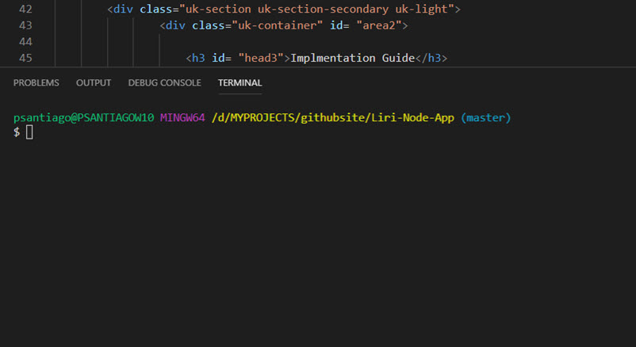
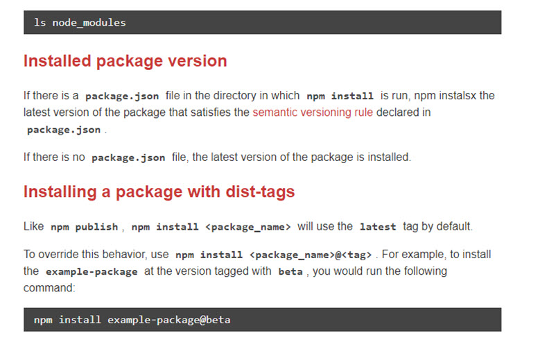

Step 2: Launch the IDE
- After downloading and installing Node JS, Open a terminal session

The following npm are api's to the required data source for Band Concerts, Spotify Music,
and Movies
- npm install bandsintown
- npm install node-spotifiy-api
- npm install omdb
The following npm are required for user requests, and the passing of secret keys to Spotify
- npm install axios
- npm install dotenv
The following npm are required for the solution to write to a log file, date and time, and
accept user and system commands
- npm install fs
- npm install moment
- npm install node-cmd
The following npm packages are for cosmetic affects including color and large ascii text
- npm install chalk
- npm install figlet

Releases
- 1.0.0: Proof of concept. Accept user commands
- 1.0.1: Spotify, OMDB, and Concert NPM Api Integration
- 2.0.0: Chalk and Figlet NPM integration
Road Map
- 3.0.0: Improved error management